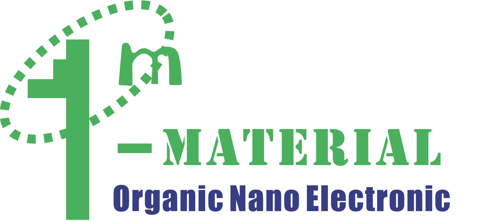

Mission
Modern electronics and materials science are bringing revolutionary advances to biointerface design and are shattering the limits of what is possible in the areas of biomedical diagnostics and sensing, neuroscience, and prosthetics.
This new field of bioelectronics seeks to explore the interfaces between electronics, materials science and other engineering disciplines with biochemistry, biophysics, and general biology. This interactive symposium will focus on defining the frontiers of bioelectronics and mapping future directions. The collegial environment of this symposium will allow leading experts in the field, rising stars, and novices to discuss a broad array of topics.
Organizers
Prof. Marco Rolandi
Dr. Aleksandr Noy
Prof. Jonathan Rivnay
Prof. Sahika Inal
Our Sponsors
